Tutto quello che serve per configurare StreamNova sul televisore: dalla Home ai sottotitoli, dal player a TorBox, fino a SIMKL e alla nuova modalità Sync tra dispositivi della stessa rete.
StreamNova si usa interamente col telecomando. La barra laterale sinistra è il punto di partenza: da lì raggiungi Home, Film, Serie TV, Preferiti, Cerca, Addon e Impostazioni.
All'avvio la Home mostra un contenuto in evidenza e, scorrendo verso il basso, le righe Continua a guardare, Piattaforme di Streaming e i cataloghi. Il contorno azzurro indica sempre l'elemento selezionato: premi OK per aprirlo.
| Tasto | Cosa fa |
|---|---|
| Su / Giù | Si sposta tra le righe e le voci di un elenco; nelle Impostazioni scorre le sezioni. |
| Sinistra / Destra | Scorre le card di una riga, cambia filtro o valore. Nel player, con i comandi nascosti, apre il seek preview. |
| OK | Apre il contenuto, attiva un interruttore, conferma una scelta. Tenuto premuto su un episodio apre il menu contestuale. |
| BACK | Torna indietro in modo intelligente (vedi sotto). Nel player chiude prima i pannelli aperti. |
| Play / Pausa | Avvia o mette in pausa la riproduzione, se il telecomando dispone del tasto. |
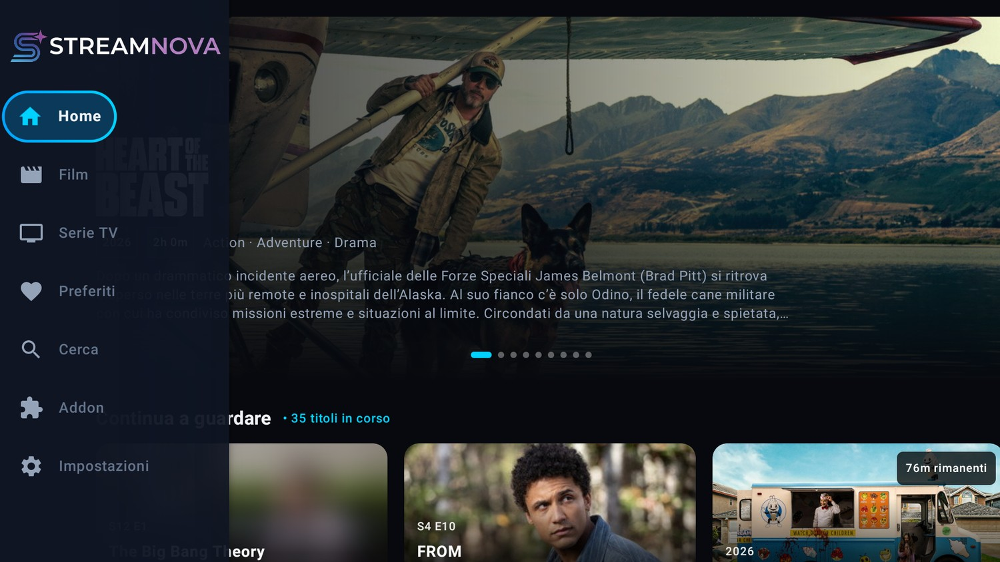
La Home riunisce in un'unica schermata ciò che stavi guardando, le piattaforme disponibili e i cataloghi in evidenza.
| Sezione | Contenuto |
|---|---|
| In evidenza | Carosello di titoli principali con locandina, anno, durata o stagioni, generi, voto e sinossi. I puntini sotto indicano la posizione nel carosello. |
| Continua a guardare | Film e serie iniziati, con avanzamento, episodio corrente e minuti rimanenti. È personalizzabile nella sezione 3. |
| Piattaforme di Streaming | Le piattaforme configurate (Netflix, HBO Max, Disney+, Prime Video e altre). Apri una card per sfogliarne il catalogo. |
| In evidenza: Film / Serie TV | Classifiche e selezioni tematiche: Popolari, Novità, Top 10, tendenze della settimana, consigliati. |
| Catalogo personale | Le righe aggiunte dagli addon Stremio installati, quando il motore Debrid è attivo. |
Dentro una piattaforma o una sezione Film / Serie TV trovi i filtri Tutti, Film, Serie TV, Top 10 e i generi (Azione, Fantascienza, Dramma, Commedia, Animazione e altri). Il collegamento Seleziona Provider apre la configurazione delle piattaforme mostrate nella Home.
Se un genere non è coperto dai cataloghi configurati, StreamNova può usare TMDB come fallback: l'opzione si trova in Impostazioni → Ricerca e cataloghi.
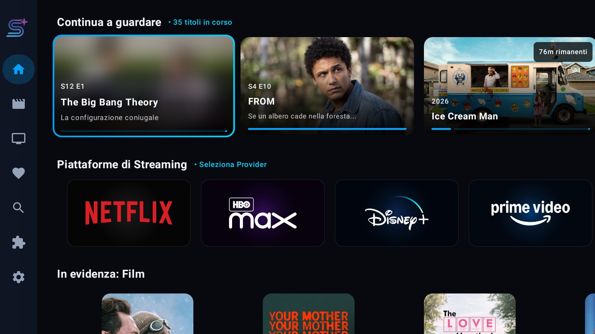
La sezione Impostazioni → Continua a guardare controlla aspetto, comportamento e ordinamento dell'omonima riga della Home.
| Voce | Predefinito | Cosa cambia |
|---|---|---|
| Mostra Continua a guardare | ON | Mostra o nasconde del tutto la riga nella Home. |
| Layout della riga | Scheda | Scheda (16:9 con testo), Larga (horizontal card) o Locandina (poster verticale). |
| Usa miniature episodi | OFF | Usa lo still dell'episodio invece dello sfondo del titolo. |
| Sfoca non visti | OFF | Sfoca le miniature del prossimo episodio non ancora iniziato, per evitare spoiler. Vale anche per gli episodi mai visti nella scheda della serie. |
| Prossimo episodio dall'ultimo raggiunto | OFF | Calcola il successivo dall'episodio più avanti nella visione. Disattivalo se fai rewatch e preferisci l'episodio guardato più di recente. |
| Mostra episodi non ancora trasmessi | ON | Include in anticipo i prossimi episodi prima della messa in onda. |
| Ordinamento | Predefinito | Predefinito, Titolo (A–Z) o Voto TMDB. |
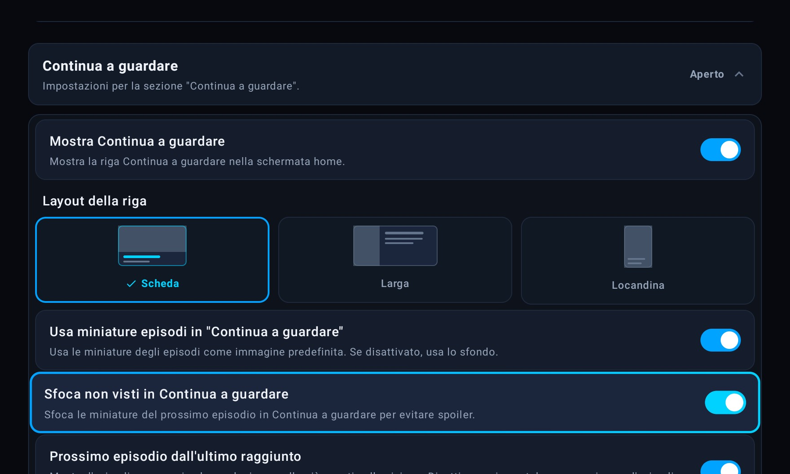
Le opzioni successive — miniature, sfocatura, episodio successivo, episodi non trasmessi e ordinamento — si trovano scorrendo la stessa sezione espandibile, subito sotto il selettore del layout.
La scheda di un titolo raccoglie azioni, cast, stagioni ed episodi. Le serie TV hanno un comando in più per segnare l'intera serie come vista.
| Tipo | Ordine dei comandi |
|---|---|
| Film | Riproduci / Riprendi → Cuore (Preferiti) → Occhio (segna visto) → Trailer → [Seleziona fonte, solo Debrid]. |
| Serie TV | Riproduci / Riprendi S… E… → Cuore → Serie già vista → Trailer → [Seleziona fonte, solo Debrid]. |
Nelle serie TV, subito a destra del cuore, trovi la pillola con l'icona dell'occhio. Un solo comando segna tutta la serie come vista: tutti gli episodi conosciuti risultano completati e la serie esce da «Continua a guardare». Quando è attiva, la pillola diventa «Serie vista» e un secondo OK propone «Segna serie come da vedere» per annullare.
Sotto le azioni scorri le card di Creatore e Cast. Più in basso le linguette Episodi, Produzione e Dettagli mostrano rispettivamente le stagioni, le case di produzione e le informazioni tecniche del titolo.
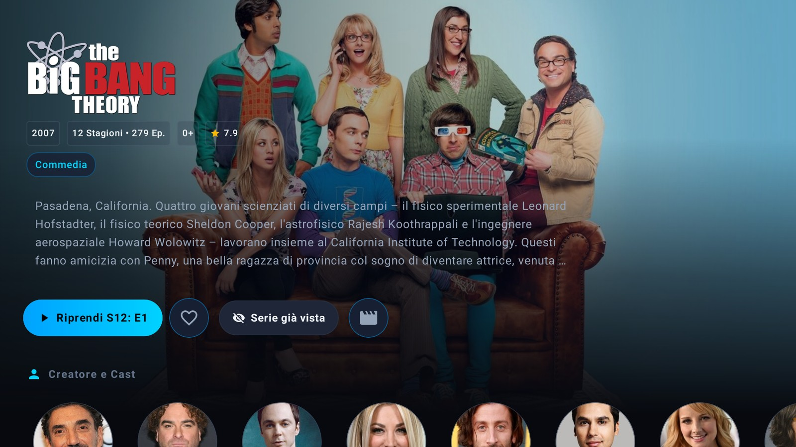
La riga Selezione stagione mostra tutte le stagioni con il numero di episodi. Sotto, ogni episodio riporta miniatura, numero, titolo, durata, data di uscita e sinossi. Gli episodi già visti hanno un indicatore; quelli mai iniziati possono essere sfocati se l'opzione Sfoca non visti è attiva.
Tieni premuto OK su una riga episodio: si apre una finestra con le azioni rapide, senza avviare automaticamente la riproduzione.
| Voce | Cosa fa |
|---|---|
| Segna episodio come visto oppure «Segna episodio da vedere» | Cambia lo stato del singolo episodio. La voce si adatta allo stato corrente; badge, avanzamento della serie e «Continua a guardare» si aggiornano subito. |
| Sfoglia di nuovo le fonti | Riapre la scelta delle sorgenti per quell'episodio, senza riprodurre nulla in automatico. Utile quando un flusso non va o vuoi cambiarne uno. |
| Stagione già vista | Segna tutti gli episodi della stagione corrente come visti, con un solo comando. |
| Annulla | Chiude il menu senza modifiche. Anche BACK chiude la finestra. |
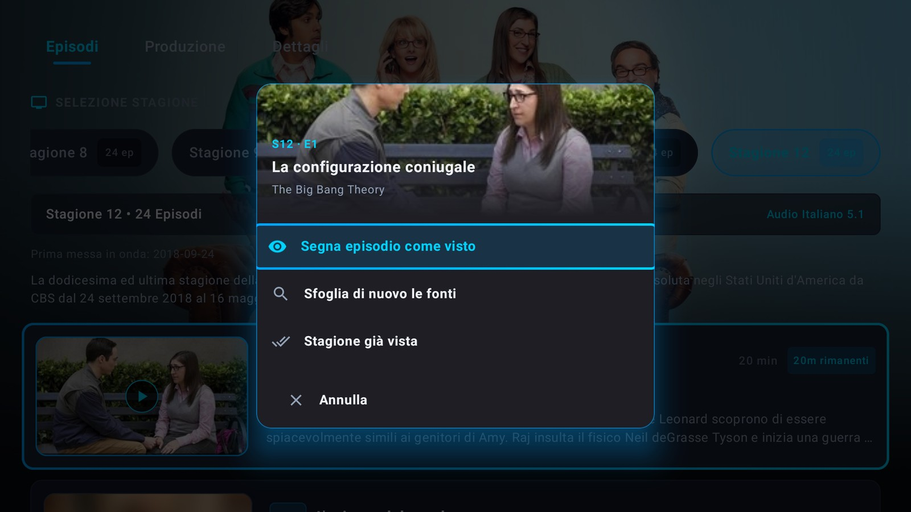
Sono le preferenze che StreamNova applica all'avvio di ogni film o episodio. Si trovano in Impostazioni → Riproduzione.
| Voce | Predefinito | Cosa fa |
|---|---|---|
| Avvio automatico (Autoplay) | OFF | Avvia da solo il contenuto selezionato, senza passare dalla schermata di scelta della fonte. |
| Risoluzione preferita | Auto | Auto lascia scegliere al player; puoi forzare 4K, 1080p o 720p. |
| Lingua audio preferita | Italiano | Lingua privilegiata all'avvio, se presente nella sorgente. «Originale / Qualsiasi» non impone nulla. |
| Privilegia tracce italiane | ON | Mette in cima le sorgenti in italiano quando disponibili. |
| Riproduci automaticamente il prossimo episodio | ON | A fine episodio mostra il countdown e passa al successivo. |
| Riprendi automaticamente la riproduzione | ON | Riparte dal punto in cui avevi interrotto, quando il progresso è disponibile. |
| Mostra overlay di caricamento | ON | Schermata cinematografica con poster e logo durante l'avvio. OFF usa l'indicatore compatto. |
| Mostra stato di caricamento | ON | Mostra la fase reale: preparazione sorgente, connessione, caricamento, buffering. |
| Overlay in pausa | OFF | Dopo qualche secondo di pausa mostra poster, titolo e sinossi; sparisce alla ripresa. |
| Avvisi sui contenuti | OFF | Brevi avvisi su volgarità, violenza, paura e alcol/droghe all'avvio di film e serie. |
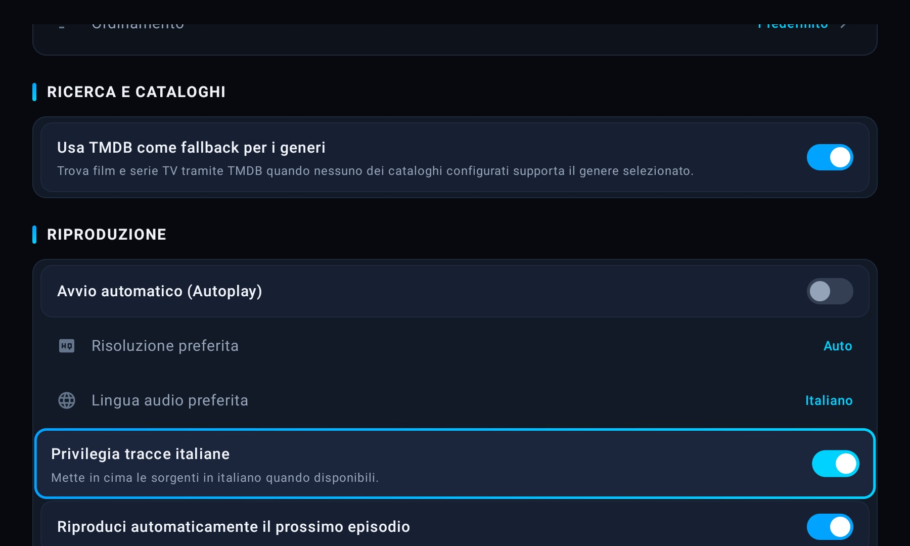
Le opzioni su overlay di caricamento, stato di caricamento, overlay in pausa e avvisi sui contenuti si trovano nella stessa sezione, subito sotto la ripresa automatica.
Premi un tasto direzionale per mostrare i comandi. La barra scompare da sola dopo pochi secondi; mentre è visibile, il focus si sposta tra i pulsanti.
| Pulsanti | Funzione |
|---|---|
| Play / Pausa · Episodio successivo | Avvia o sospende; solo serie TV, salta al prossimo episodio se disponibile. |
| Adatta · Qualità video | Cambia l'adattamento dell'immagine; apre la scelta della risoluzione del flusso. |
| Velocità · CC Sottotitoli | 0,75× · 1,0× · 1,25× · 1,5×; apre il pannello completo dei sottotitoli. |
| Audio · Sorgente | Sceglie la traccia audio; riapre la selezione manuale delle fonti. |
Con i comandi nascosti, premi ◀ o ▶: sopra la timeline compare un'anteprima con il fotogramma del punto proposto, il tempo di destinazione (ad esempio 1:56 / 20:27) e il salto richiesto (+10s). La riproduzione non salta subito: premi OK per confermare, BACK per annullare.
Il pannello CC riunisce aspetto, sincronizzazione e tracce disponibili, incluse quelle scaricate da OpenSubtitles.
| Controllo | Cosa fa |
|---|---|
| Sottotitoli Forced | Attiva i sottotitoli forzati presenti nel video, di solito per i dialoghi in lingua straniera. ON/OFF. |
| Subtitle Appearance | Anteprima dal vivo di Size, Background e Opacity: le modifiche si applicano subito e restano salvate. |
| Sincronizzazione Offset | Sposta i sottotitoli di −250 ms, 0 ms o +250 ms. «Ripristina (0 ms)» annulla l'offset. |
| Tracce Integrate | Elenca le tracce del flusso, ad esempio «Italiano», «Inglese — English [CC] (non udenti)»; Nessuno disattiva i sottotitoli. |
| OpenSubtitles | Se hai configurato la chiave API, il pannello mostra anche i risultati online e lo stato del download. |
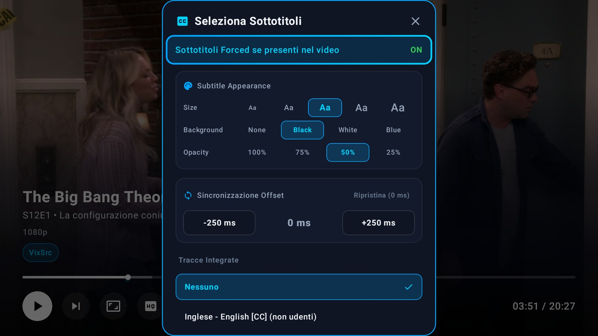
Il pulsante con l'altoparlante apre le tracce audio con codec e dettagli. La scelta vale per la sessione corrente e non modifica la preferenza globale «Lingua audio preferita».
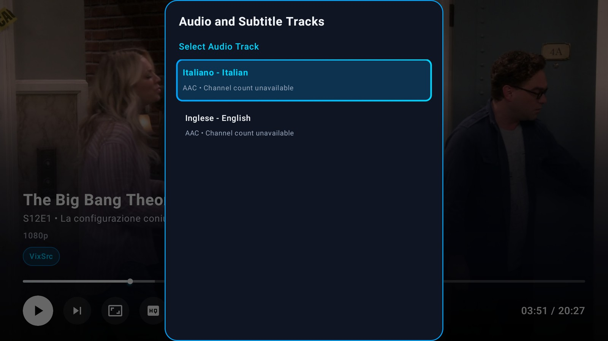
StreamNova può riutilizzare l'ultimo flusso funzionante per lo stesso film o episodio, risparmiando la ricerca delle sorgenti.
| Voce | Cosa fa |
|---|---|
| Riusa l'ultimo link | Riproduce automaticamente l'ultimo flusso funzionante per lo stesso contenuto, se la cache è ancora valida. |
| Durata cache ultimo link | Per quanto tempo conservare il riferimento: 6 ore, 12 ore, 1 giorno (predefinito), 3 giorni o 7 giorni. |
Dalla scheda del titolo, Seleziona fonte apre l'elenco manuale delle sorgenti con qualità, audio, sottotitoli e stato della cache. Il comando è disponibile solo nel motore Debrid TorBox; con il Web Streaming la fonte viene scelta automaticamente.
Nell'elenco delle fonti puoi riconoscere:
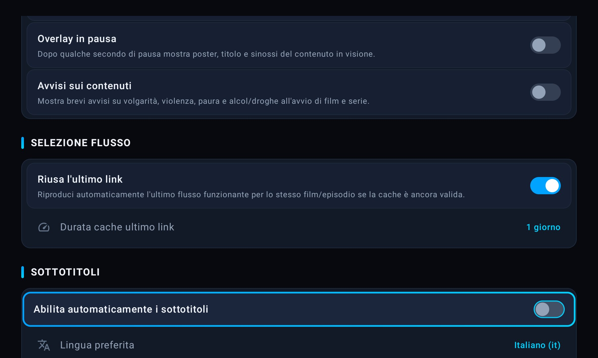
StreamNova ha due motori alternativi. Si sceglie in Impostazioni → Motore di Riproduzione → Modalità di riproduzione.
| Modalità | Come funziona | Cosa serve |
|---|---|---|
| Web Streaming Gratuito (HTTP Scraper) | Riproduce direttamente i flussi degli scraper web gratuiti (VixSrc, AnimeSaturn, CB01 e altri). | Nessun account o chiave API. La sezione Addon è nascosta. |
| Debrid TorBox (1080p / 4K Ultra HD) | Usa esclusivamente gli addon Stremio e TorBox Instant per risolvere sorgenti in alta definizione. | Account TorBox, chiave API e almeno un addon Stremio. |
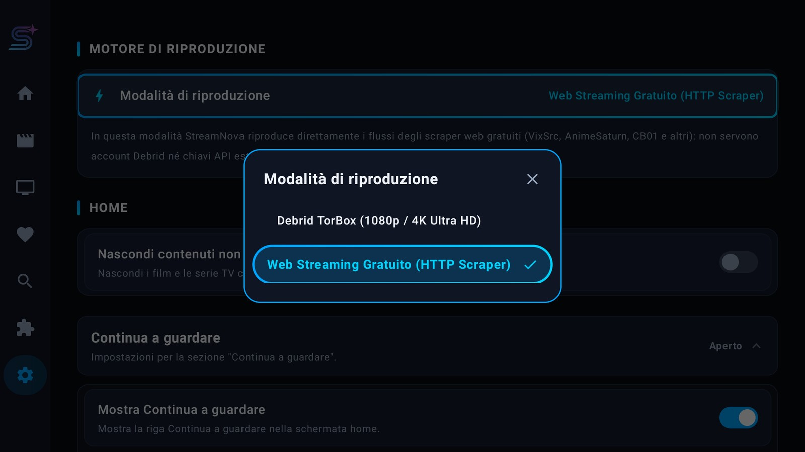
Gli addon compatibili con il protocollo Stremio aggiungono sorgenti in 1080p e 4K al motore Debrid. Si gestiscono da Addon nella barra laterale.
Per non digitare URL col telecomando, la schermata Addon mostra un QR Code e l'indirizzo da aprire nel browser di smartphone o PC:
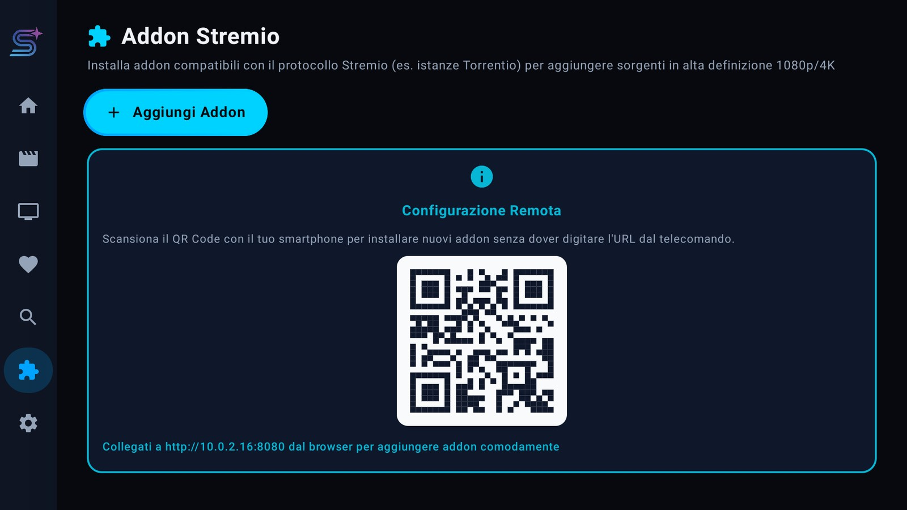
SIMKL tiene allineati watchlist, cronologia e avanzamento tra StreamNova e gli altri servizi che usi. L'account è facoltativo: senza collegamento l'app funziona normalmente.
| Dato | Effetto in StreamNova |
|---|---|
| Playback | I punti di pausa salvati diventano la riga Continua a guardare. |
| Watchlist / Plan to Watch | I titoli che vuoi guardare entrano nei Preferiti. |
| Libreria serie e anime | Badge «visto» nella scheda, prossimo episodio da guardare e stato delle stagioni. |
| Film completati | I titoli conclusi risultano visti e non restano in «Continua a guardare». |
| Scrobbling | Avvio, pausa e stop della riproduzione vengono inviati a SIMKL; se la rete manca, gli eventi restano in coda e vengono ritentati. |
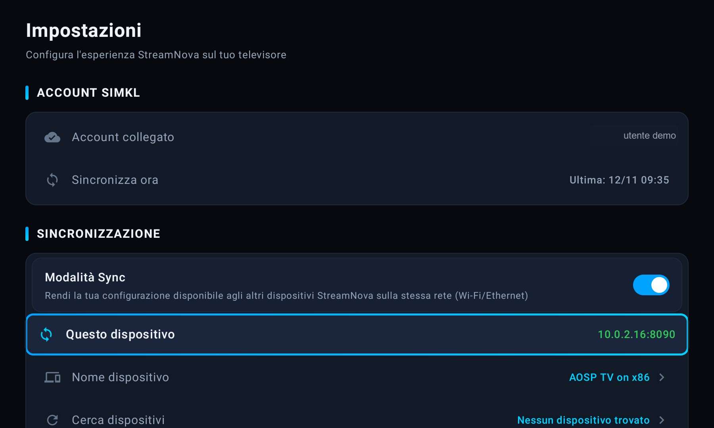
Sync replica la configurazione completa di StreamNova su un altro dispositivo della stessa rete locale: impostazioni, addon, account SIMKL, preferiti e progressi. Nessun cloud: i dati passano direttamente da un TV all'altro.
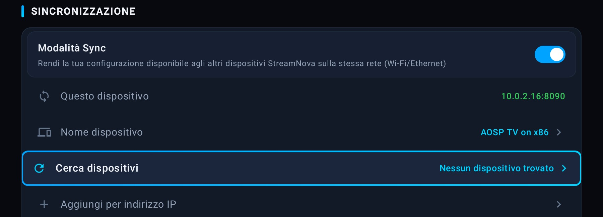
| Categoria | Contenuto |
|---|---|
| Impostazioni e chiavi API | Tutte le preferenze generali, di riproduzione e avanzate; chiavi TorBox e OpenSubtitles; PIN del controllo genitori (solo hash). |
| Addon Stremio | Elenco degli addon installati con URL e stato attivo/disattivo. |
| Account SIMKL | Credenziali dell'account SIMKL, solo se il dispositivo sorgente è collegato. |
| Preferiti e progressi | Preferiti, riga «Continua a guardare» e avanzamento dei singoli episodi. |
La sincronizzazione non è una copia cieca: le impostazioni vengono applicate, mentre la libreria viene unita senza cancellare nulla.
| Dato | Regola |
|---|---|
| Impostazioni | Vengono applicate quelle del dispositivo sorgente, categoria per categoria. |
| Addon | Gli addon mancanti vengono installati, quelli non presenti nella sorgente vengono rimossi. |
| Preferiti | Unione: un titolo è preferito se lo è su almeno uno dei due dispositivi. |
| Progressi | Per ogni titolo vince la visione più recente (lastWatchedAt); per gli episodi vince la riga aggiornata più di recente. I titoli presenti solo sul ricevente restano. |
| SIMKL | Le credenziali vengono importate solo se la sorgente è collegata; una sorgente scollegata non disconnette il ricevente. |
| Controllo | Cosa fare |
|---|---|
| Stessa rete? | Wi‑Fi e Ethernet devono appartenere alla stessa subnet; evita reti «ospiti» o VLAN separate. |
| Sync attiva su entrambi? | L'interruttore deve essere ON e l'indirizzo IP:8090 visibile in verde. |
| App aperta? | Tieni StreamNova aperta su entrambi i TV durante ricerca e trasferimento. |
| Isolamento client? | Disattiva l'isolamento AP sul router, se presente. |
| Discovery bloccata? | Usa Aggiungi per indirizzo IP e inserisci l'IP mostrato dall'altro dispositivo. |
Le impostazioni di base dell'app: lingua dell'interfaccia, protezione dei contenuti e aggiornamento del pacchetto.
Puoi scegliere Italiano, Inglese, Spagnolo, Francese o Tedesco. La lingua cambia l'interfaccia di StreamNova; i titoli e le sinossi seguono la lingua dei metadati TMDB.
La voce verifica le release pubblicate su GitHub e propone la versione più recente. StreamNova:
Se la release non contiene un APK installabile su quel dispositivo, l'app lo dice esplicitamente e non avvia il download.
La riga Versione dell'app mostra la versione installata (in questa guida: 1.0.9). La sezione Informazioni in fondo alle Impostazioni riporta versione, riconoscimenti TMDB ed ExoPlayer.
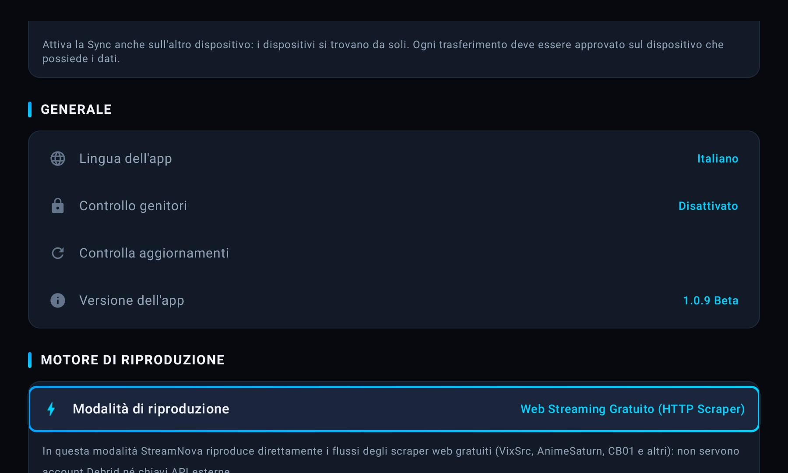
Le preferenze globali dei sottotitoli si trovano in Impostazioni → Sottotitoli; OpenSubtitles aggiunge la ricerca online.
| Voce | Predefinito | Cosa fa |
|---|---|---|
| Abilita automaticamente i sottotitoli | OFF | Attiva i sottotitoli all'avvio, se disponibili. |
| Lingua preferita | Italiano (it) | Italiano, inglese, spagnolo, francese, tedesco, portoghese oppure «Originale / Qualsiasi». |
| Dimensione sottotitoli | Media | Piccolissima, Piccola, Media, Grande, Molto grande. |
| Sfondo dei sottotitoli | Nero | Nessuno, Nero, Bianco, Blu. |
| Opacità sfondo | 50% | 100%, 75%, 50% o 25%. Il testo resta sempre opaco. |
| Posizione dei sottotitoli | Basso | Basso, Centro, Alto. |
| Sottotitoli Forced | ON | Privilegia i sottotitoli forzati presenti nel video, tipici dei dialoghi in lingua straniera. |
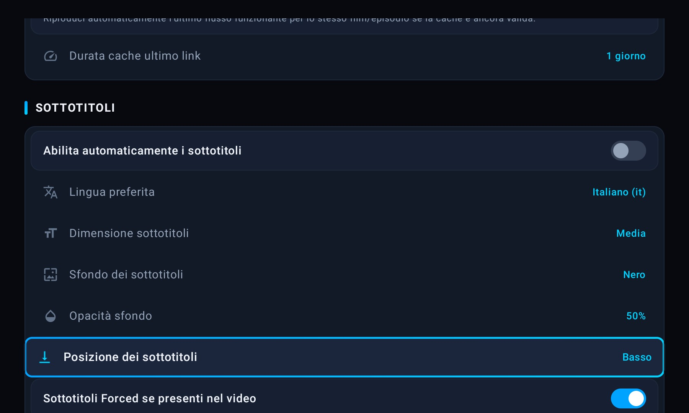
Inserisci la chiave API personale (da opensubtitles.com) e premi Verifica connessione. La chiave viene usata subito, senza riavviare l'app.
Le opzioni di Impostazioni → Avanzato agiscono sul motore video e audio. I valori predefiniti vanno bene nella maggior parte dei casi: modifica una voce alla volta e verifica il risultato.
| Voce | Valori | Cosa fa |
|---|---|---|
| Dimensione Target Buffer | Predefinito 175 MB Minimo 150 MB Bilanciato 300 MB Esteso 500 MB+ / 4K | Memoria destinata al buffering. Valori alti aiutano i flussi 4K ma consumano più memoria. |
| Buffer Iniziale (Avvio) | 1,5 s · 2,5 s · 3,5 s | Attesa prima di partire: più alta = avvio più lento ma più stabile su reti lente. |
| Back Buffer | 0 · 10 · 15 · 30 · 60 s | Conserva il video già visto per rendere istantanei i salti all'indietro. |
| Audio Passthrough / Bitstream | ON / OFF | Invia l'audio compatibile direttamente al sistema audio (soundbar, amplificatore). |
| Audio Tunneling | ON / OFF | Percorso audio dedicato su dispositivi compatibili; può ridurre la latenza. |
| Decoder Fallback (FFmpeg) | Disattivato Attivo Preferisci software | Decoder software alternativo per flussi non compatibili; può aumentare l'uso della CPU. |
| Auto Frame Rate Matching (AFR) | ON / OFF | Adatta la frequenza dello schermo a quella del contenuto, se il TV lo supporta. |
| Dolby Vision Fallback | ON / OFF | Gestione alternativa per la compatibilità Dolby Vision. |
| Statistiche Avanzate (Stats for Nerds) | ON / OFF | Mostra dati tecnici utili alla diagnosi: codec, risoluzione, buffer, frame persi. |
| Cancella Cache e Dati Temporanei | — | Elimina cache e dati temporanei; utile in caso di problemi persistenti. |
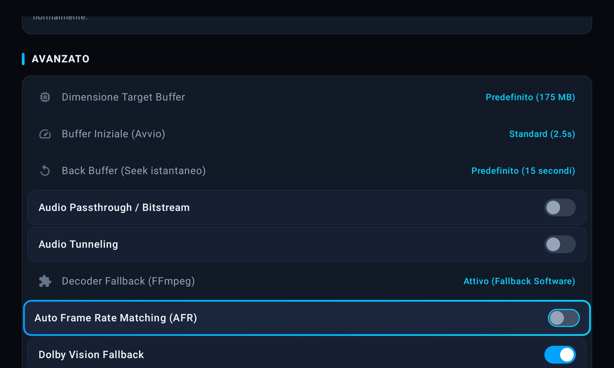
Una configurazione equilibrata per l'uso quotidiano, adatta sia a Google TV / Android TV sia a Fire TV Stick.
| Sintomo | Cosa controllare |
|---|---|
| Avvio lento o buffering | Rete instabile o sorgente lenta. Prova un'altra fonte o una qualità inferiore; aumenta il buffer iniziale solo se il problema è ricorrente. |
| Audio nella lingua sbagliata | Verifica «Lingua audio preferita» e «Privilegia tracce italiane». Nel player apri il pannello audio e scegli la traccia corretta. |
| Sottotitoli assenti | Controlla lingua, «Abilita automaticamente» e le tracce del pannello CC. Se usi OpenSubtitles, verifica la chiave API. |
| Flusso non riproducibile | Prova un'altra sorgente. Se persiste su tutti i titoli, cancella cache e dati temporanei; valuta il decoder fallback. |
| La serie è sparita da Continua a guardare | È stata completata (o segnata «Serie già vista»). Riapri la scheda e usa «Segna serie come da vedere». |
| Episodio sbagliato in Continua a guardare | Disattiva «Prossimo episodio dall'ultimo raggiunto» se stai facendo un rewatch: verrà usato l'episodio guardato più di recente. |
| SIMKL non sincronizza | Controlla di essere collegato, che la sessione non sia scaduta e che l'autorizzazione non sia di sola lettura. Premi «Sincronizza ora». |
| Sync non trova l'altro TV | Stessa rete, Sync ON su entrambi, app aperta, isolamento client disattivato. Usa «Aggiungi per indirizzo IP». |
| Sync rifiutata o scaduta | L'approvazione va data entro 2 minuti sul dispositivo che possiede i dati. Ripeti la procedura. |
| Aggiornamento non disponibile | La release potrebbe non contenere un APK per l'architettura del TV, oppure il file non supera la verifica di integrità. Riprova più tardi. |
| Addon non visibile | La sezione esiste solo con motore Debrid TorBox. Controlla «Modalità di riproduzione». |
No. Con il motore Web Streaming l'app funziona senza account. TorBox serve solo per il motore Debrid; SIMKL e OpenSubtitles sono integrazioni facoltative.
No: replica la configurazione tra due dispositivi accesi sulla stessa rete. Non è un backup cloud e non recupera dati se entrambi i TV vengono resettati.
Non cancella la libreria: preferiti e progressi vengono uniti. Le impostazioni della categoria selezionata vengono invece sostituite con quelle della sorgente, e gli addon non presenti nella sorgente vengono rimossi.
La pillola è pensata per le serie, dove serve segnare intere stagioni. Per un film usa il cuore (Preferiti) o «Segna come visto» nella scheda.
Hai attivato «Sfoca non visti in Continua a guardare». La sfocatura riguarda gli episodi mai iniziati e serve a evitare spoiler: non blocca la riproduzione.
Sì. Tutte le finestre di StreamNova sono progettate per il D-pad: OK conferma, BACK chiude, le frecce spostano il focus. I dialoghi Sync e il menu episodio sono finestre separate, quindi il focus non esce mai dalla finestra.
StreamNova revoca l'accesso e rimuove i dati importati da SIMKL, ma conserva le preferenze e i progressi creati localmente. Sul sito SIMKL non viene cancellato nulla.
In Impostazioni → Generale → Versione dell'app, oppure in fondo alla sezione Informazioni. La versione di questa guida è 1.0.9 (build 1011).
| Termine | Significato |
|---|---|
| Debrid | Servizio che mette in cache i file su server veloci e li rende disponibili come stream (qui: TorBox). |
| Addon Stremio | Estensione che aggiunge sorgenti o cataloghi tramite un manifest URL. |
| Scrobble | Invio automatico a un servizio (SIMKL) di avvio, pausa e completamento di ciò che guardi. |
| mDNS / NSD | Protocollo che permette ai dispositivi della stessa rete di trovarsi senza inserire IP. |
| ABI | Architettura del processore (arm64, arm32, x86, x86_64): determina l'APK compatibile. |
| AFR | Auto Frame Rate Matching: adatta la frequenza del TV al contenuto. |
| Passthrough | Invio dell'audio non decodificato a un ricevitore esterno. |
| Seek preview | Anteprima del fotogramma e dell'orario mentre si scorre la timeline. |
| Forced | Sottotitoli “obbligatori” per i dialoghi in lingua straniera presenti nel video. |